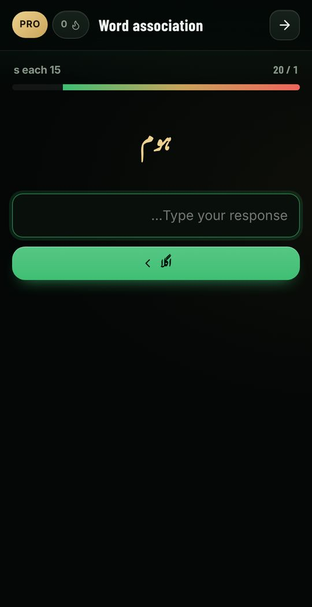
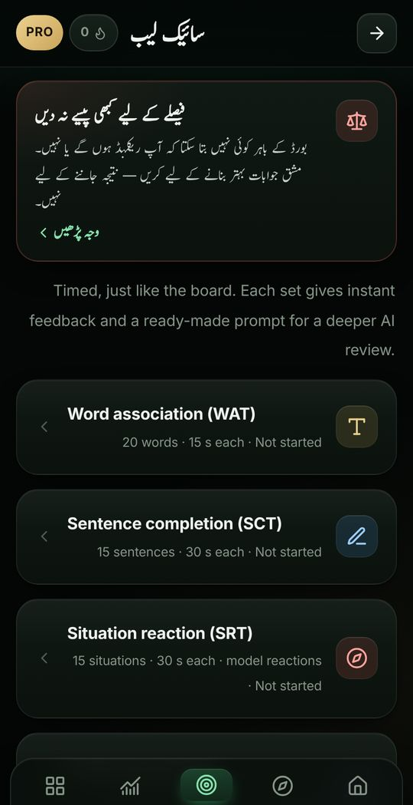
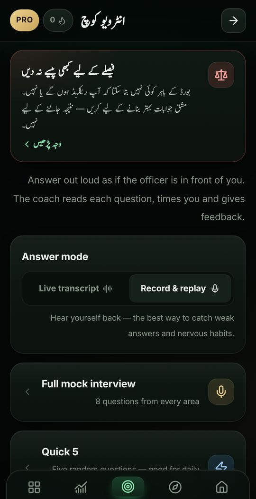
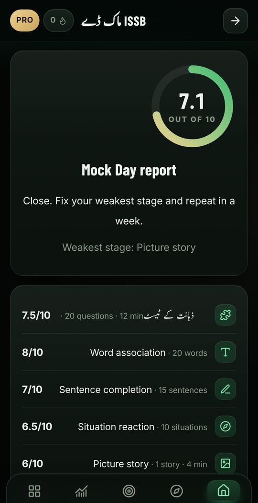
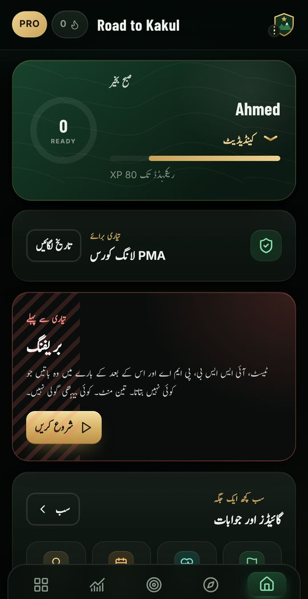
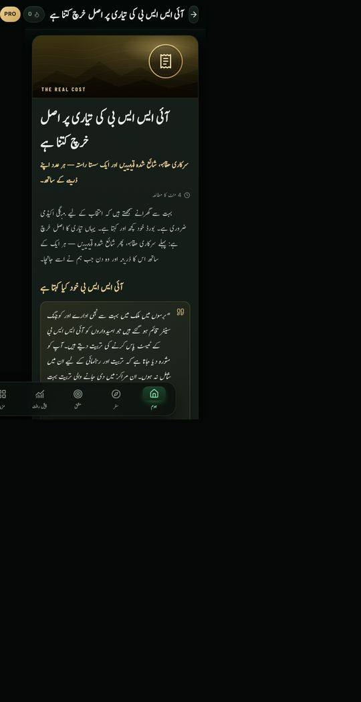

آئی ایس ایس بی اور پی ایم اے کی آزاد تیاری
بورڈ سے پہلے آئی ایس ایس بی کا ہر ٹیسٹ جانیں — گھر پر، صرف 13 روپے روزانہ سے۔
آئی ایس ایس بی خود امیدواروں کو کوچنگ سینٹر جوائن نہ کرنے کا مشورہ دیتا ہے: ان کی تربیت “بہت محدود” ہوتی ہے۔ یہاں آپ ہر ٹیسٹ کی مشق اپنے الفاظ میں کرتے ہیں، رٹنے کے لیے کوئی بنے بنائے جواب نہیں۔ اس صفحے کی ہر بات اپنے ثبوت کے ساتھ ہے: آئی ایس ایس بی کے اپنے صفحات، اکیڈمیوں کی اپنی شائع شدہ قیمتیں، اور ایپ کی اصل اسکرینیں۔
- آئی ایس ایس بی، افواج یا کسی اکیڈمی سے وابستہ نہیں
- انتخاب کا کوئی وعدہ نہیں
- انگریزی اور اردو
- کوئی بھی فون، کوئی اکاؤنٹ نہیں

ایپ کی اصل اسکرین: ورڈ ایسوسی ایشن ٹیسٹ، بورڈ کی طرح وقت کے ساتھ۔
ثبوت
کوچنگ سینٹرز کے بارے میں آئی ایس ایس بی خود کیا کہتا ہے
“برسوں میں ملک میں بہت سے نجی ادارے اور کوچنگ سینٹر قائم ہو گئے ہیں جو امیدواروں کو آئی ایس ایس بی کے ٹیسٹ پاس کرنے کی تربیت دیتے ہیں۔ آپ کو مشورہ دیا جاتا ہے کہ تربیت اور رہنمائی کے لیے ان میں شامل نہ ہوں۔ ان مراکز میں دی جانے والی تربیت بہت محدود ہوتی ہے اور سوچ میں سختی پیدا کرتی ہے۔”
امیدواروں کے لیے آئی ایس ایس بی کی ہدایات · issb.gov.pk/guidelines · 20 نومبر 2026 کو جانچا
یہ اردو ترجمہ ہے؛ آئی ایس ایس بی کے اصل انگریزی الفاظ نیچے کی تصویر میں ہیں۔

اور بورڈ کس چیز کا خرچ خود اٹھاتا ہے
“سلیکشن بورڈ آپ کو سرکاری خرچ پر رہائش اور کھانا فراہم کرے گا۔”
جوائننگ انسٹرکشنز، شق 5آپ کے گھر کے پتے سے سفری الاؤنس — ٹرین کا کرایہ، یا جب سڑک کا فاصلہ کم ہو تو بس کا کرایہ۔
شق 24آپ کا انٹرویو اور ٹیسٹ چار دن میں مکمل ہوتے ہیں، آمد کا دن شامل نہیں۔
شق 1
اصل خرچ
تیاری کا ایک مہینہ کتنے کا پڑتا ہے
| طریقہ | قیمت | ثبوت |
|---|---|---|
| کوچنگ اکیڈمی، لائیو کلاسیں | 15 سے 20 ہزار روپے ماہانہ | جانچاایک اکیڈمی کا اپنا فیس صفحہ · 20 نومبر 2026 |
| اکیڈمی کے شہر میں ہاسٹل اور کھانا | تقریباً 16,500 سے 22,000 روپے ماہانہ | فہرستعوامی فہرستیں · ہم نے نہیں جانچا |
| آن لائن کوچنگ | 3,000 روپے ماہانہ سے | جانچابیچنے والے کی اپنی ویب سائٹ · 20 نومبر 2026 |
| سائیک جوابات کی پیسوں سے جانچ | 1,000 روپے فی جانچ (طلبہ 500 روپے) | جانچابیچنے والے کی اپنی ویب سائٹ · 20 نومبر 2026 |
| روڈ ٹو کاکول | 7 دن 99 روپے · 30 دن 399 روپے · ہمیشہ کے لیے 799 روپے | ہماری قیمت، سب کے لیے ایک |
کوچنگ اور ہاسٹل مل کر ایک مہینے کے تقریباً 31,500 سے 42,000 روپے بنتے ہیں — بس کے کرایے اور کتابوں سے پہلے۔ بورڈ خود آپ کا کچھ خرچ نہیں کرواتا۔ ہم کسی اکیڈمی کا نام یا درجہ نہیں دیتے؛ ادائیگی سے پہلے کسی بھی اکیڈمی سے اس کی موجودہ فیس پوچھیں۔
آپ کو کیا ملتا ہے
ایپ کی اصل اسکرینیں

سائیک لیب، بورڈ کی طرح وقت کے ساتھ
ہر سائیک ٹیسٹ کی مشق اپنے الفاظ میں، ہر جواب پر فوری رائے کے ساتھ، اور گہری جانچ کے لیے تیار پرامپٹ۔
- 207 ورڈ ایسوسی ایشن الفاظ
- 110 سینٹنس کمپلیشن
- 148 سچویشن ری ایکشن
- 40 تصویری کہانیاں
- 30 پوائنٹر کہانیاں
- 60 بیانات والا او پی آئی
- 40 اردو جملے

انٹرویو کوچ جو سنتا ہے
ایسے بلند آواز میں جواب دیں جیسے افسر سامنے ہو۔ کوچ سوال انگریزی یا اردو میں پڑھتا ہے، وقت گنتا ہے، اور آپ کے اپنے PIQ سے سوال بناتا ہے۔
- 60 اسپیکنگ کوچ موضوعات
- 78 لیکچرٹ موضوعات
- 70 گروپ ڈسکشن موضوعات
- 9 رکاوٹیں، تصویروں کے ساتھ

مثال کے طور پر ایک رپورٹ کارڈ
رپورٹ کارڈ کے ساتھ آئی ایس ایس بی موک ڈے
تقریباً ایک گھنٹے میں بورڈ کی پوری مشق — ذہانت کے ٹیسٹ، سائیک ٹیسٹ، پلاننگ کی مشق اور انٹرویو — پھر ہر مرحلے کا اسکور، اور آپ کا کمزور ترین مرحلہ۔
- 7 مراحل
- 10 میں سے اسکور

ابتدائی ٹیسٹ اور فٹنس، روزانہ
آپ کے کمزور موضوعات سے بنی مشق، روزانہ چیلنج، 30 منٹ میں 50 سوالوں کا مکمل موک (پاس کے ساتھ لامحدود)، 8 ہفتوں کا پی ٹی پلان اور دوڑ کا ٹائمر۔
- 509 جی کے اور اسلامیات فلیش کارڈز
- 8 ہفتوں کا پی ٹی پلان

سچی گائیڈز، ثبوت کے ساتھ
40+ گائیڈز: شمولیت کے سب راستے (23 انٹریز)، میڈیکل، آئی ایس ایس بی کی سرکاری تاریخیں، پی ایم اے کاکول کی زندگی — اور پیسوں والی “جانچ” کا سچ۔
- 40+ گائیڈز
- 23 شمولیت کے راستے
قیمتیں
سب کے لیے ایک قیمت۔ مفت شروع کریں۔
ہمارے وعدے
گھرانے اس پر بھروسہ کیوں کر سکتے ہیں
آئی ایس ایس بی، فوج، نیوی، پاک فضائیہ یا کسی اکیڈمی کے زیرِ انتظام یا ان سے وابستہ نہیں۔
ہم کبھی انتخاب کا وعدہ نہیں کرتے اور نہ جعلی تبصرے بناتے ہیں۔ اس صفحے کا ہر عدد اپنے ذریعے کے ساتھ ہے۔
نہ اکاؤنٹ، نہ پاس ورڈ۔ آپ کے مشق کے جوابات آپ کے فون پر رہتے ہیں۔ پرائیویسی پالیسی پڑھیں
سب کے لیے ایک قیمت، اور جو ادائیگی نہیں کر سکتے ان کے لیے اسکالرشپ۔
سوالات
گھرانے کیا پوچھتے ہیں
کیا روڈ ٹو کاکول سرکاری ہے؟
نہیں۔ یہ ایک آزاد تیاری ایپ ہے۔ درخواست صرف سرکاری ویب سائٹس پر دیں: joinpakarmy.gov.pk، joinpaknavy.gov.pk اور joinpaf.gov.pk۔
کیا ایک ایپ اکیڈمی کی جگہ لے سکتی ہے؟
آئی ایس ایس بی خود امیدواروں کو کوچنگ سینٹر جوائن نہ کرنے کا مشورہ دیتا ہے — اوپر ثبوت دیکھیں۔ فائدہ ٹیسٹوں کی روزانہ مشق، فٹ جسم اور بولنے کے اعتماد سے ہوتا ہے۔ ایپ آپ کو مشق دیتی ہے، اپنے الفاظ میں اور رٹنے کے لیے بنے بنائے جوابوں کے بغیر؛ دوڑ، دوستوں کے ساتھ گروپ ٹاسک اور لوگوں کے سامنے بولنا آپ خود، مفت کر سکتے ہیں۔
کیا یہ انتخاب کی ضمانت دیتی ہے؟
کوئی نہیں دے سکتا۔ ہر مرحلے پر انتخاب میرٹ پر ہوتا ہے۔ جو بھی پیسوں کے بدلے انتخاب کا وعدہ کرے وہ دھوکے باز ہے۔
یہ کن کورسز کے لیے ہے؟
PMA Long Course، Technical Cadet Course، Medical Cadet (Army Medical Colleges)، Lady Cadet Course، PN Cadet (Permanent Commission)، GD Pilot (Permanent Commission)۔ ایپ میں ہر ایک کا اپنا سلیبس، معیار اور گائیڈز ہیں۔
کیا یہ اردو میں ہے؟
جی ہاں۔ ہر اسکرین اور ہر گائیڈ انگریزی اور اردو میں ہے، اور انٹرویو کوچ بھی۔
ادائیگی کیسے کریں، اور کیا یہ محفوظ ہے؟
ایپ کے اندر ایزی پیسہ سے: کیو آر کوڈ اسکین کریں، ادائیگی کریں، اور رسید سے ٹرانزیکشن آئی ڈی درج کریں۔ ہم کبھی کارڈ، پاس ورڈ یا کوئی دستاویز نہیں مانگتے۔
اگر میں ادائیگی نہ کر سکوں تو؟
ایپ شیئر کر کے مفت دن حاصل کریں، یا ایپ میں آنر اسکالرشپ مانگیں۔
ہم نے کیسے جانچا
ذرائع
- امیدواروں کے لیے آئی ایس ایس بی کی ہدایاتissb.gov.pk/guidelines — 20 نومبر 2026 کو پڑھا
- آئی ایس ایس بی کی جوائننگ انسٹرکشنز، شق 1، 5 اور 24issb.gov.pk — 20 نومبر 2026 کو پڑھا
- کوچنگ کی فیسایک اکیڈمی کا اپنا فیس صفحہ (آن لائن لائیو کلاسیں) — 20 نومبر 2026 کو پڑھا
- سائیک جانچ کی قیمت اور آن لائن کوچنگبیچنے والے کی اپنی ویب سائٹ — 20 نومبر 2026 کو پڑھا
- ہاسٹل اور دوسری اکیڈمیوں کی قیمتیںعوامی فہرستیں اور اشتہارات، 2024–26 — ہم نے نہیں جانچا؛ قیمتیں بدلتی رہتی ہیں
- ایپ میں کیا ہےیہ صفحہ بنتے وقت ایپ سے خود گنا گیا
تصویروں میں پیلا نشان ہمارا ہے۔ ہم ہر صفحے کی وہ نقل محفوظ رکھتے ہیں جو ہم نے پڑھی۔
آپ کا پہلا موک آج مفت ہے۔
روڈ ٹو کاکول کسی بھی فون پر کھولیں — نہ اسٹور، نہ اکاؤنٹ، شروع کرنے کے لیے کوئی ادائیگی نہیں۔
مفت شروع کریں